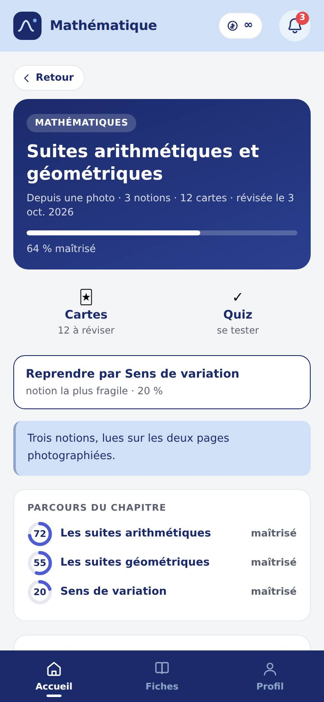
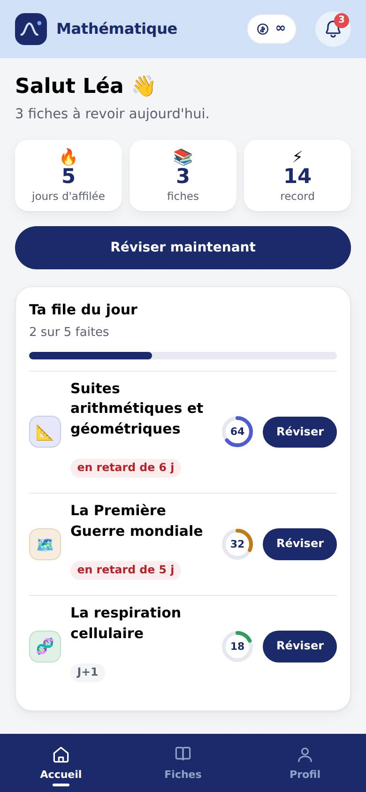
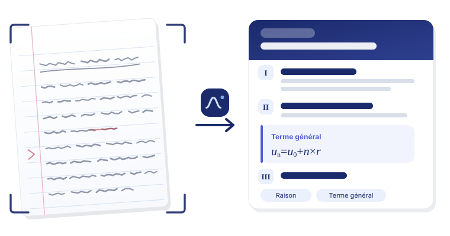
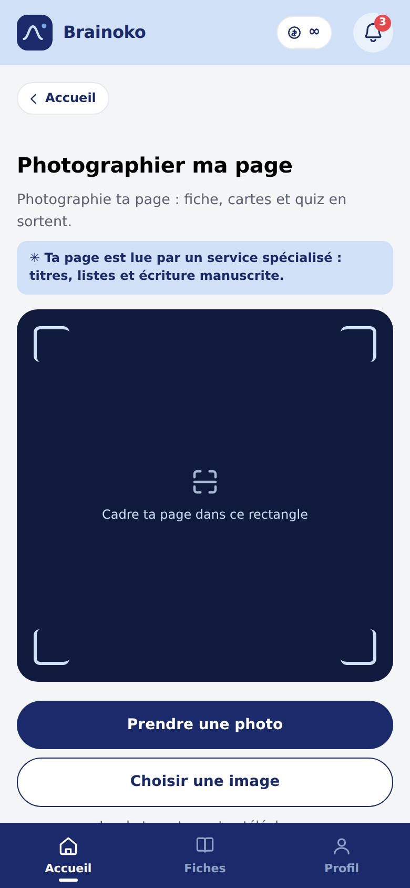
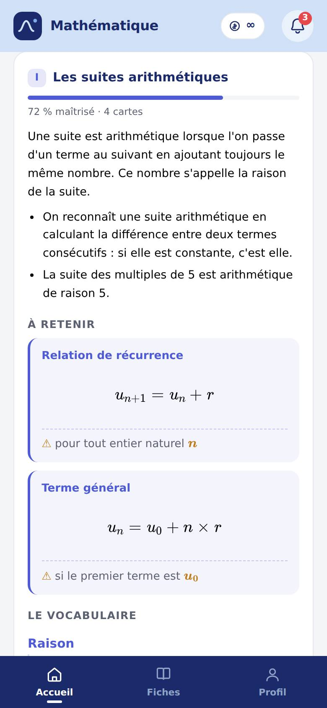
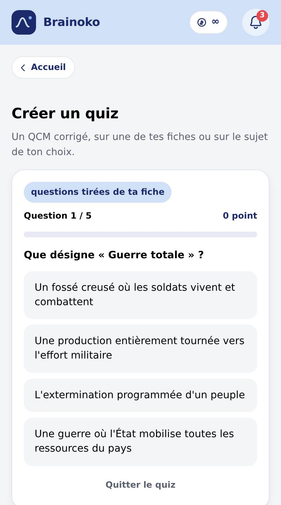
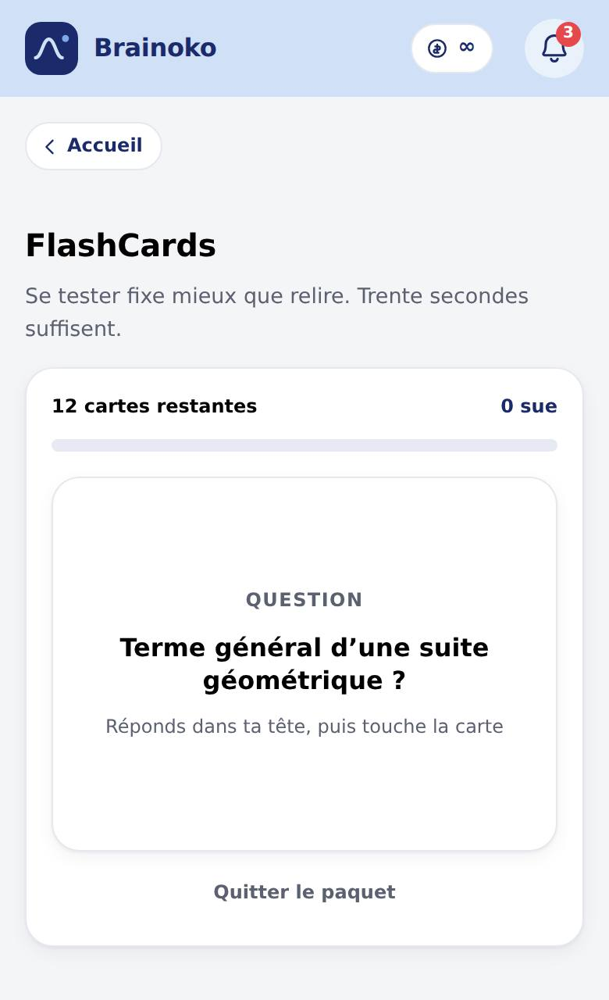

Le résumé
Ton cours remis au propre, avec le sommaire et la notion la plus fragile mise en avant.
Collège · Lycée · Études supérieures
Ta photo devient une fiche claire, des flashcards et un quiz. Puis l'app te redit quoi revoir, le jour où tu allais l'oublier.
Gratuit, sans carte bancaire. Ton adresse suffit — pas de mot de passe.

Le problème
Recopier une leçon prend une heure, alors on ne la recopie pas. On relit, on surligne, on se dit que c'est rentré. La photographier prend trois secondes — et ce qui en sort n'est pas une photo de plus dans ta galerie.

Comment ça marche
Une page, ou quatre d'un coup. L'écriture manuscrite est lue comme le texte imprimé. Pas de scanner, pas de PDF à préparer.

Notions numérotées, vocabulaire, repères, formules composées comme des formules. Ce qui n'a pas pu être lu est signalé — jamais deviné.

Les cartes et le quiz sortent de ta fiche, pas d'une banque générique. Et la file du jour te ramène dessus avant l'oubli.

Une fiche, trois usages
On n'apprend pas un cours d'histoire comme un chapitre de maths, ni la veille comme trois semaines avant. Chaque fiche ouvre trois portes.

Ton cours remis au propre, avec le sommaire et la notion la plus fragile mise en avant.

Trente secondes dans le bus. Tu réponds dans ta tête, tu retournes, tu dis si c'était su.
Un QCM corrigé qui note chaque notion : tu vois noir sur blanc ce qui n'est pas acquis.
La méthode
Un cours lu une fois s'efface en quelques jours. Revu juste avant de l'oublier, il tient des mois : c'est la répétition espacée, et c'est tout ce que fait la file du jour.
Tu sais ? L'échéance recule. Tu sèches ? Elle se rapproche. Rien à régler : la fiche remonte toute seule dans ta file, et la cloche compte ce qui est dû.
Jouons franc jeu
Pas de « Lucas vient de s'abonner » inventé toutes les dix secondes. Les bulles de l'app ne parlent que de ce que tu as fait, toi.
Tu ne verras pas de notes cinq étoiles signées de prénoms inventés. Le jour où de vrais élèves en écriront, ce seront les leurs.
Une photo floue, un mot mangé : le passage est marqué « à vérifier » au lieu d'être deviné. Une fiche fausse coûte plus cher qu'un trou.
Elles servent à écrire la fiche, puis disparaissent. Tes fiches, elles, sont copiées pour te suivre d'un appareil à l'autre — et deux boutons, dans ton profil, te les rendent ou les effacent pour de bon.
Les formules
Une fiche coûte 100 crédits, parce que lire tes photos et rédiger a un coût réel. Tout le reste est gratuit et sans limite : relire, refaire tes cartes, relancer un quiz, autant de fois que tu veux.
Le paiement n'est pas encore ouvert : aujourd'hui, tout est gratuit et rien ne t'est débité. Les formules ci-dessous sont celles qui arrivent.
Sans engagement, mensuel, résiliable quand tu veux. Tes fiches restent sur ton téléphone même si tu arrêtes.
Avant de te lancer
Oui, le manuscrit est lu comme l'imprimé. Il faut une photo nette, la page bien à plat et un éclairage correct — c'est tout. Si une ligne reste illisible, elle est signalée au lieu d'être inventée.
Ton adresse e-mail, et rien d'autre : pas de mot de passe, pas de nom, pas de numéro. Tu reçois un lien, tu cliques, c'est ouvert. Elle sert à deux choses — te reconnaître, et retrouver tes fiches quand tu changes d'appareil. Ensuite, l'app marche même sans connexion.
Tes fiches vivent dans le navigateur de ton appareil : vide-le, et elles partent avec. Pour les emporter, ouvre un compte depuis ton profil, avec ton adresse e-mail — et si tu révises sur deux appareils, les deux bibliothèques se recollent au lieu de s'écraser.
Toutes. Maths, physique-chimie, SVT, histoire-géo, philo, français, économie, informatique… Les formules scientifiques sont composées comme des formules, pas recopiées en code.
Tes fiches, tes cartes et tes quiz, oui : ils sont sur l'appareil. Seule la lecture d'une nouvelle photo demande du réseau.
Elles sont lues pour écrire la fiche, puis jetées. Elles ne sont ni stockées, ni montrées à personne, ni rattachées à ton nom — l'app ne le connaît pas.
Relis-la : c'est la première minute de révision, et la seule façon d'être sûr. Les parties incertaines sont déjà marquées. Une fiche ratée se supprime en deux touches, et tu peux aussi taper ton texte à la main plutôt que le photographier.
Commence par le chapitre que tu comprends le moins. Une photo, et tu as de quoi le réviser ce soir.
Créer ma première ficheGratuit, sans carte bancaire. Trente secondes pour la première.
Entre ton adresse pour commencer. Tes fiches te suivront d'un appareil à l'autre.
ou
Regarde ta boîte mail
Le lien part vers . Il vaut 20 minutes et ne sert qu'une fois. Pense aux indésirables.
Pas de mot de passe à retenir : tu reçois un lien, tu cliques, c'est ouvert. Ton adresse sert à te reconnaître, à rien d'autre — ce qu'on garde de toi.
Une photo, et ta fiche est prête.
Commencer